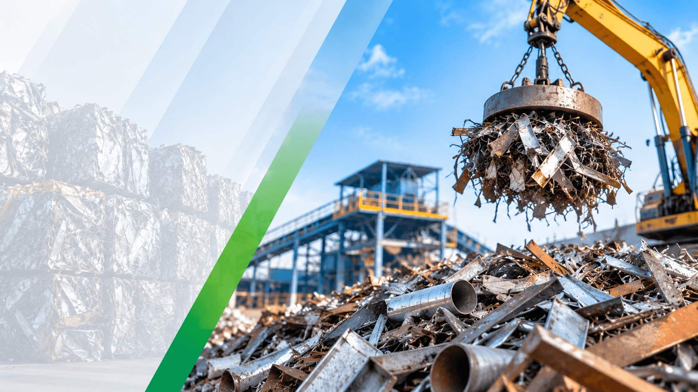
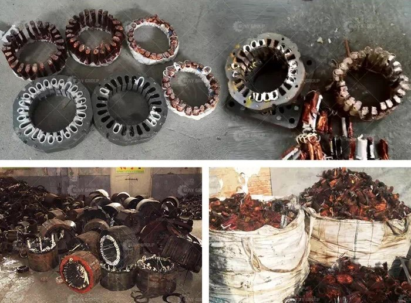
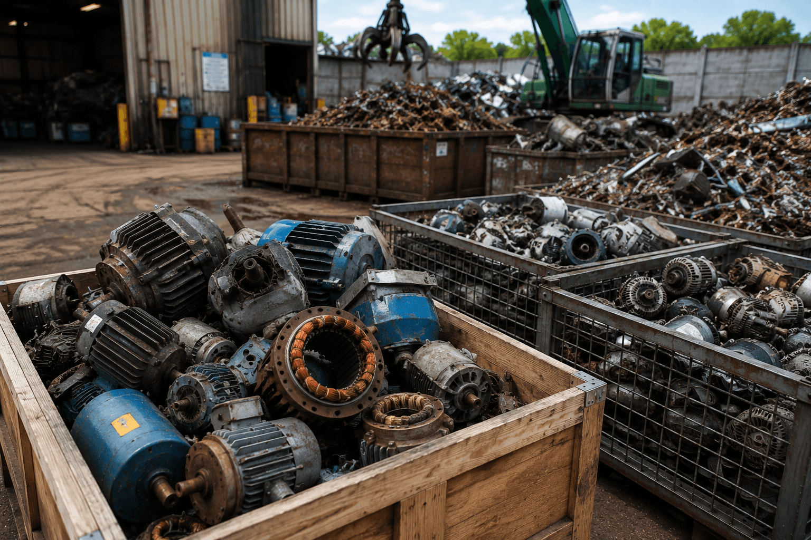

Scrap Sourcing, Processing and Recovered Metal Supply
From assessing incoming scrap to supplying separated metals, our work focuses on recovering material value.
Materials & Services
From assessing incoming scrap to supplying separated metals, our work focuses on recovering material value.

Domestic and International Scrap Sourcing
We purchase suitable electric motor scrap, alternators and selected metal-bearing materials from domestic and overseas suppliers.
Each offer is assessed according to material type, condition, composition, quantity and location, with commercial terms agreed for the transaction.

Electric Motor Scrap Processing
We sort and process small, large and mixed electric motors to recover copper, aluminium and ferrous components.
The processing approach depends on motor construction, size and material composition.

Alternator Scrap Processing
We process automotive alternators to separate copper windings, aluminium housings and ferrous components for further recycling and industrial use.

Selected Appliance and Assembly Processing
We assess selected motor-bearing appliances and metal-bearing assemblies for processing suitability.
Acceptance depends on the material composition, condition and associated handling requirements.

Material Sorting and Separation
We separate mixed components into identifiable metal streams, organising recovered materials according to their type and condition.

Recovered Metal Supply
We supply available recovered copper, aluminium and ferrous scrap grades to trade and industrial buyers.
Material descriptions, specifications, quantities and supply terms are agreed for each lot.
Build a Working Relationship With Ashiga
We welcome discussions with suppliers offering recurring scrap quantities and buyers seeking ongoing recovered-metal supply.
Share your material profile, expected quantities and purchase or delivery requirements with our team.